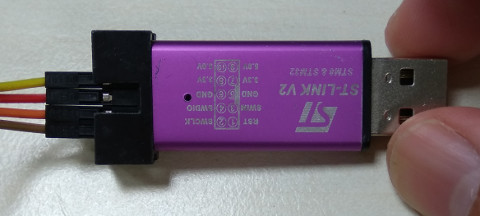
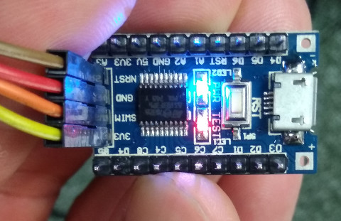

STM8S103 >> C/C++
LED
main.c
#define PB_ODR *(unsigned char*)0x5005
#define PB_IDR *(unsigned char*)0x5006
#define PB_DDR *(unsigned char*)0x5007
#define PB_CR1 *(unsigned char*)0x5008
#define PB_CR2 *(unsigned char*)0x5009
void main(void)
{
int cnt;
PB_DDR = 0x20;
PB_CR1 = 0x20;
do{
PB_ODR^= 0x20;
for(cnt=0; cnt<29000; cnt++);
}while(1);
}
Makefile
SDCC=sdcc SDLD=sdld OBJECTS=main.ihx .PHONY: all clean all: $(OBJECTS) clean: rm -f $(OBJECTS) %.ihx: %.c $(SDCC) -lstm8 -mstm8 --out-fmt-ihx $(CFLAGS) $(LDFLAGS) $<
燒錄測試
$ make sdcc -lstm8 -mstm8 --out-fmt-ihx main.c $ sudo stm8flash -c stlinkv2 -p stm8s103f3 -u Determine OPT area Due to its file extension (or lack thereof), "Workaround" is considered as RAW BINARY format! Unlocked device. Option bytes reset to default state. Bytes written: 11 $ sudo stm8flash -c stlinkv2 -p stm8s103f3 -s flash -w main.ihx Determine FLASH area Due to its file extension (or lack thereof), "main.ihx" is considered as INTEL HEX format! 194 bytes at 0x8000... OK Bytes written: 194
完成

